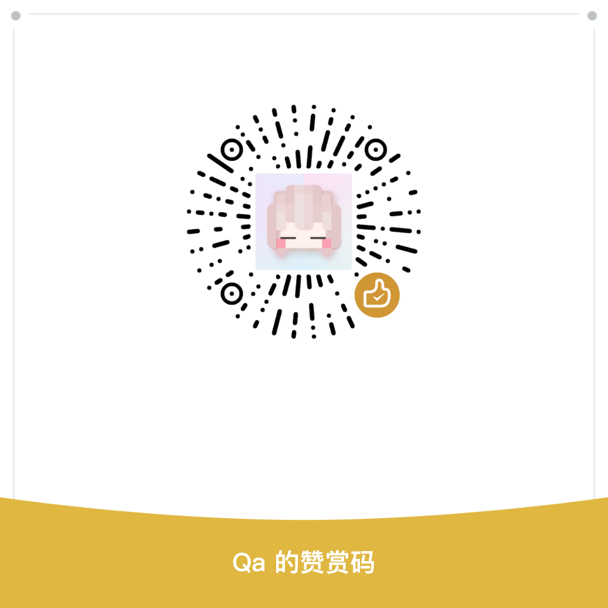

奶一口
您的捐赠将帮助Qa持续维护和更新矿石种植工艺模组，感谢每一份支持！
捐赠方式
扫描下方二维码进行打赏，任意金额都是对我们的莫大鼓励
微信打赏
扫描二维码即可进行微信打赏

若二维码失效，请联系管理员更新
支付宝捐赠
扫描二维码即可进行支付宝打赏
若二维码失效，请联系管理员更新
捐赠说明
- 赞赏资金将用于：模组维护、模组功能开发。
- 本赞赏为自愿行为，不赞赏也可正常使用所有模组的完整功能。
- 未成年人请在家长同意下理性支持。
您的捐赠将帮助Qa持续维护和更新矿石种植工艺模组，感谢每一份支持！
扫描下方二维码进行打赏，任意金额都是对我们的莫大鼓励
扫描二维码即可进行微信打赏

若二维码失效，请联系管理员更新
扫描二维码即可进行支付宝打赏
若二维码失效，请联系管理员更新